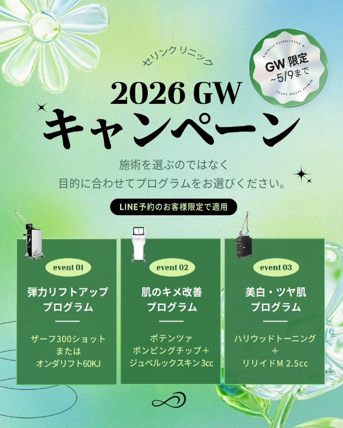
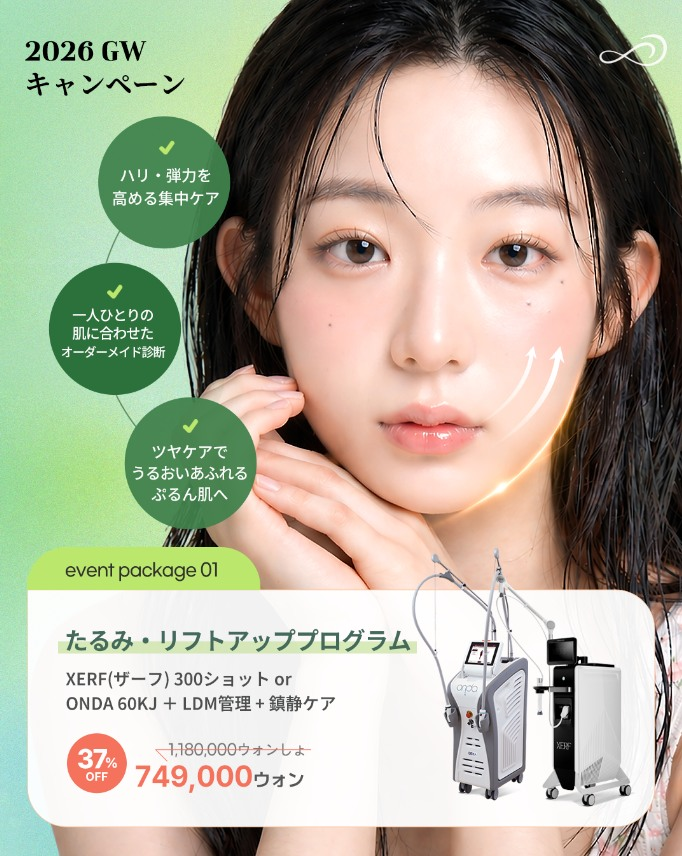
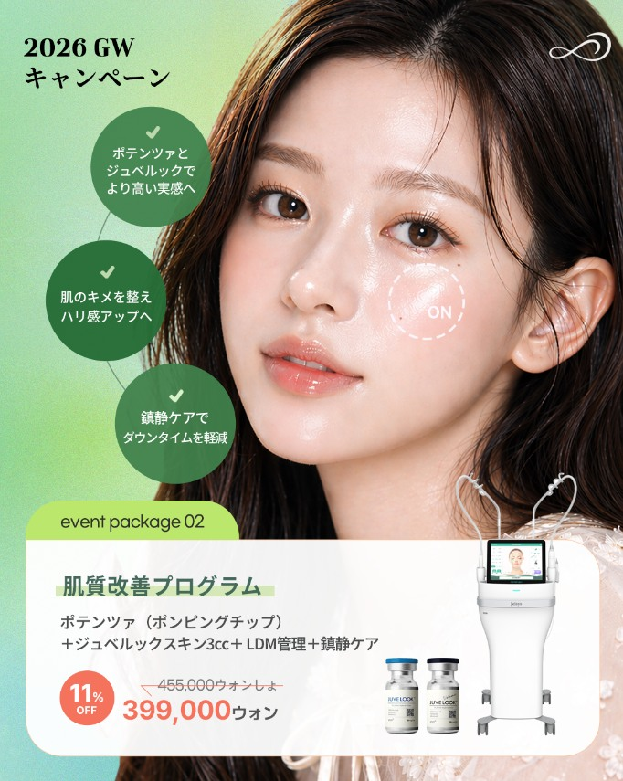
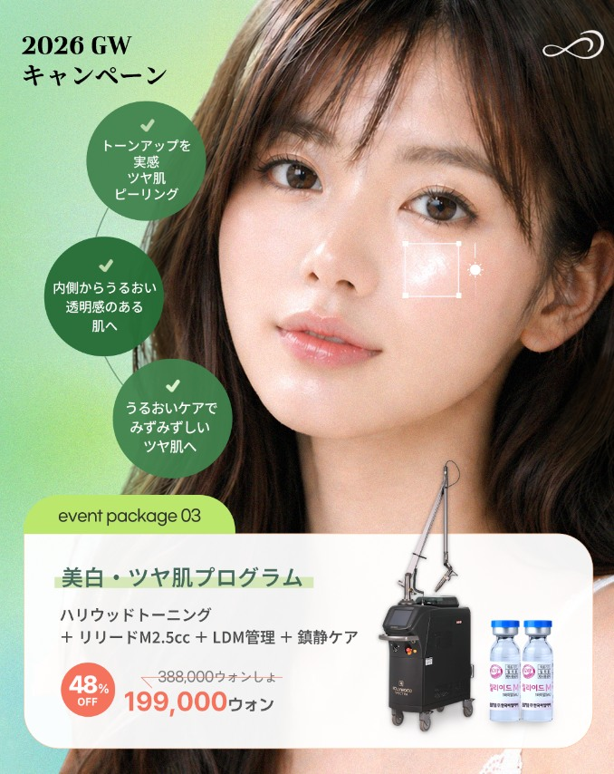

성과 해석
CTR 2.92%, CPC 464원, 클릭→LPV 78.5%로, 이벤트 관심이 단순 클릭에 그치지 않고 실제 랜딩페이지 검토로 이어졌습니다. 특히 이 소재는 BOF 전체 LPV의 85.6%를 발생시켜 핵심 전환 소재 역할을 했습니다.
CPM13,560원
CTR2.92%
CPC464원
클릭→LPV78.5%
프로필 방문231회
게시물 참여564회
4장의 이미지는 각각 다른 광고가 아니라 하나의 GW 이벤트 카루셀 소재입니다. 따라서 한 소재의 클릭·랜딩페이지 도달·전환 준비도를 통합해 분석합니다.
첫 장에서 행사를 선언하고, 이후 3장의 패키지별 혜택·가격으로 선택을 구체화합니다.




BOF의 핵심은 클릭 수 자체보다 클릭 이후 실제 랜딩페이지까지 도달했는지입니다.
CTR 2.92%, CPC 464원, 클릭→LPV 78.5%로, 이벤트 관심이 단순 클릭에 그치지 않고 실제 랜딩페이지 검토로 이어졌습니다. 특히 이 소재는 BOF 전체 LPV의 85.6%를 발생시켜 핵심 전환 소재 역할을 했습니다.
첫 장에서 GW 한정·5월 9일까지·LINE 예약 고객 한정을 명확히 제시해 긴급성과 대상 조건을 동시에 만들었습니다. 이후 리프팅·피부결·미백 세 프로그램으로 욕구를 분류하고, 정가·할인가·할인율을 함께 보여줘 가격 판단을 빠르게 만들었습니다.
| 소재 | 광고비 | 노출 | CPM | 링크 클릭 | 고유 클릭 | CTR | CPC | LPV | 클릭→LPV | LPV당 비용 | 프로필 방문 | 게시물 참여 | 저장 | 공유 |
|---|---|---|---|---|---|---|---|---|---|---|---|---|---|---|
| GW EP · 4장 카루셀 | 172,496원 | 12,721회 | 13,560원 | 372회 | 360회 | 2.92% | 464원 | 292회 | 78.5% | 591원 | 231회 | 564회 | 7회 | 3회 |
광고비 ÷ 랜딩페이지 조회이벤트 페이지를 실제로 연 고객 한 명을 확보하는 비용입니다. BOF에서 가장 중요한 비용 지표입니다.
랜딩페이지 조회 ÷ 링크 클릭 × 100클릭 후 페이지 로딩까지 성공한 비율입니다. 링크 오류·페이지 속도·호기심 클릭 여부를 함께 반영합니다.
링크 클릭 ÷ 노출 × 100가격·혜택·마감기한이 행동을 얼마나 강하게 유도했는지 보여줍니다.
광고비 ÷ 링크 클릭이벤트 상세 확인 행동 한 번을 확보하는 비용입니다.
문의 수 ÷ LPV × 100광고 이후 CS 데이터가 연결될 때 계산하는 최종 광고 품질 지표입니다. 현재는 월간 관측치만 사용할 수 있습니다.
광고비 ÷ 실제 환자 수광고가 실제 환자와 연결되면 판단할 수 있습니다. 일본 전체 관리용 CAC는 244,530원이지만 GW EP 단독 귀속은 아직 확정할 수 없습니다.
GW 한정 캠페인과 할인 구조를 인지합니다.
패키지와 가격에 관심을 보이고 상세 페이지를 선택합니다.
클릭자의 78.5%가 실제 이벤트 페이지에 도달했습니다.
UTM과 고객 ID를 연결해야 소재별 문의·예약·매출을 확정할 수 있습니다.
CTR 2.92%, LPV당 약 591원으로 BOF 핵심 소재 역할이 확인됐습니다. 계절 이벤트의 기본 템플릿으로 유지합니다.
리프팅·피부결·미백을 각각 단독 광고로 분리해 어떤 욕구가 문의와 예약을 만드는지 확인합니다.
각 카드·랜딩·LINE에 UTM 및 캠페인 코드를 적용해 LPV→문의→예약→시술→매출을 동일 고객 기준으로 연결합니다.